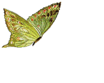
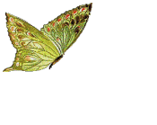

我怎么能够把你来比作夏天？
Shall I compare thee to a summer's day?
你不独比它可爱也比它温婉
Thou art more lovely and more temperate
狂风把五月宠爱的嫩蕊作践，
Rough winds do shake the darling buds of May,
夏天出凭的期限由未免太短
And summer's lease hath all too short a date
天上的眼睛有时照得太酷烈
Sometime too hot the eye of heaven shines,
它那炳耀的金颜又常遭掩蔽
And often is his gold complexion dimmed,
被机缘或无常的天道所摧折，
And every fair from fair sometime declines,
没有芳艳不终于凋残或销毁
By chance, or nature's changing course untrimmed
但是你的长夏永远不会凋落
But thy eternal summer shall not fade,
也不会损失你这皎洁的红芳
Nor lose possession of that fair thou ow'st,
或死神夸口你在他的影里漂泊
Nor shall death brag thou wander'st in his shade,
当你在不朽的诗里与时同长
When in eternal lines to time thou grow'st,
只要有人类，或人有眼睛，
So long as men can breathe, or eyes can see,
这诗将长存，并赐给你生命。
So long lives this, and this gives life to thee.
 
